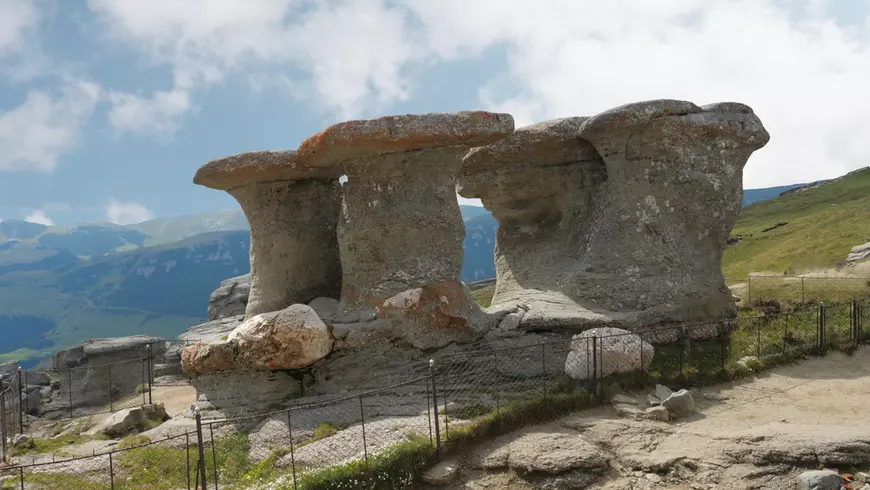

Babele este vestitul monument natural situat pe Platoul Bucegilor, care a fost mereu o atracție turisticǎ, la o altitudine de 2.292 de metri, în vecinătatea vârfului Baba Mare, cu aceeaşi altitudine şi cu orientare pe direcţia nord-sud. Oamenii de ştiinţǎ spun că apa, vântul, dar și înghețul au creat aceste douǎ stânci care seamănă cu nişte babe cocoşate ce stau la şuetǎ. În cărțile de geografie se spune cǎ aceste roci cu forme ciudate şi interesante sunt numite „ciuperci” stâncoase și sunt delimitate de Valea Jepilor spre est şi Valea Şugărilor în vest.
Din cele mai vechi timpuri, oamenii au fost pur si simplu fascinați de această minunăție a naturii, Sfinxul. Originea numelui Sfinxului este datorată asemănării sale cu un cap uman, mai exact cu Sfinxul Egiptean, formarea lui fiind datorată eroziunii vântului. Format dintr-un bloc mare de piatră ce a căpătat forma de astăzi într-un timp foarte îndelungat, Sfinxul din Bucegi, aflat pe platoul Bucegi, măsoară 8 metri în înălțime și 12 metri în lățime.
------------------------------------------------------------------- ----------------------------------------
----------------------------------------